सुविकल्प: Mine Repurposing Tool
Select factors and sub-factors to discover suitable repurposing options for your mining site
![Coal Controller Organisation emblem]()
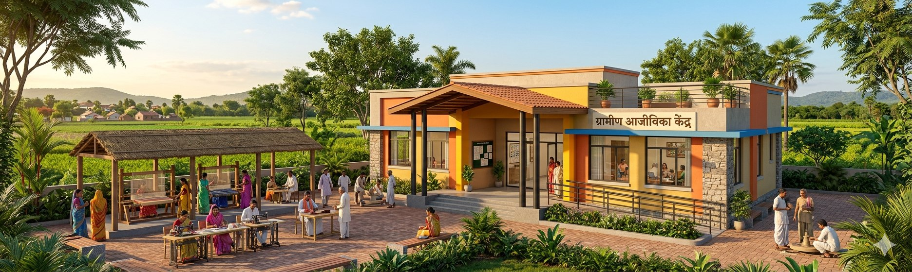
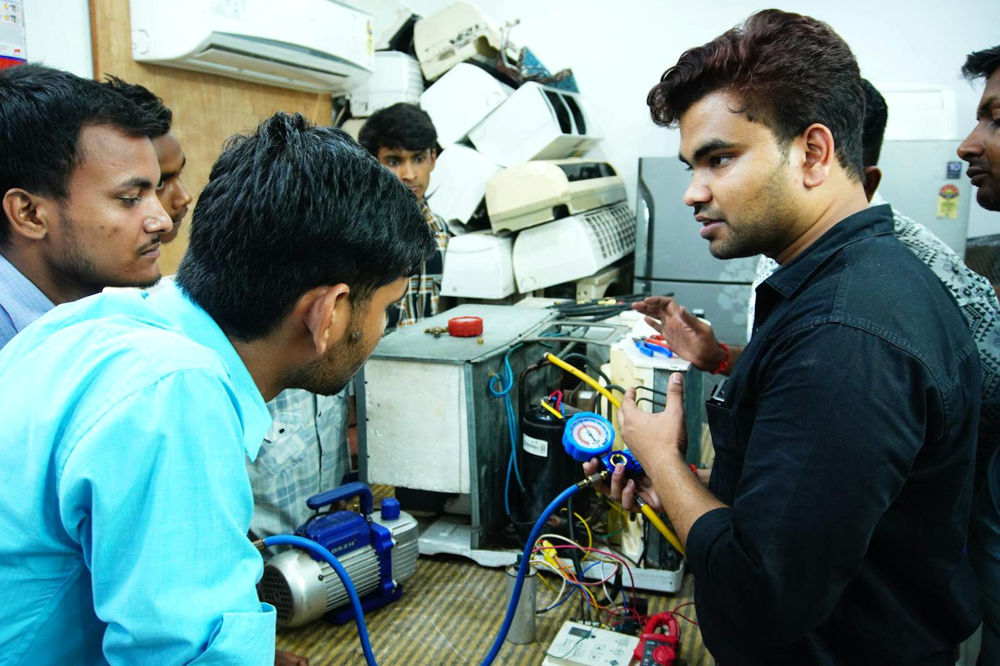
Concept for a Livelihood Centre on closed, reclaimed, or repurposed coal mine land — supporting skill development, self-employment, enterprise creation, local service delivery, artisan and producer groups, and alternative livelihoods for mine-affected communities. Site suitability, scale planning, and strategic rationale are covered here.
This concept proposes the development of a Livelihood Centre within a closed, reclaimed, or repurposed mine area as part of a broader post-mining land-use and just-transition strategy. The objective is to transform under-utilized mine land, selected built assets, and available infrastructure into a community-serving facility supporting: skill-training classrooms; sector-specific practical training labs; digital learning and computer training rooms; entrepreneurship and counselling rooms; production-cum-training spaces; common facility centres; women's livelihood and self-help group activity zones; local artisan, craft, tailoring, food-processing, agri-allied, repair, construction-skill, solar, electrical, plumbing, logistics, hospitality, or service-sector training areas; incubation and micro-enterprise support rooms; co-working or start-up support space for local youth; market-linkage, e-commerce, branding, and packaging support facility; raw material bank, equipment bank, or shared machinery room; placement, apprenticeship, and employer-connect desk; and multipurpose community training hall.
Mine-closure and coal-transition guidance increasingly emphasizes that closure should not be treated only as an environmental or engineering process, but also as a transition toward new economic, social, and productive uses of land and infrastructure. Recent mine-closure frameworks highlight livelihood support, local economic diversification, stakeholder consultation, and repurposing of reclaimed land and assets as important just-transition outcomes.
A Livelihood Centre is a strong mine-area repurposing option where mining closure or downscaling affects local employment, informal workers, contract workers, local vendors, transporters, women's groups, artisans, youth, and small enterprises dependent directly or indirectly on the mining economy. Key strategic benefits include:
The following matrix provides a structured checklist for assessing the suitability of the proposed site for the selected repurposing option. It identifies the key physical, technical, environmental, infrastructure, legal, and owner-side readiness parameters that should be reviewed before the project is advanced to the next stage of development. The purpose of this matrix is to help the project owner understand existing site conditions, technical requirements, potential constraints, and preparatory actions required before feasibility studies, approvals, or tendering are initiated.
| Main Category | Sub-category | What to Assess / Prepare | Why It Matters | Owner-Side Readiness |
|---|---|---|---|---|
| Land / Area | Total land area | Gross area, usable area, exclusion zones, buffers, expansion potential | Determines training block, workshop block, production area, common facility centre, storage, vehicle access, and future expansion | Land map and usable-area estimate |
| Land contiguity | Fragmentation, internal obstacles, access restrictions, safety-restricted areas | Livelihood centres function better when training, production, counselling, market-linkage, and support areas are integrated | Parcel continuity note | |
| Topography / grading | Slope, terraces, level difference, cut-fill requirement, universal access feasibility | Affects trainee access, movement of raw materials, workshop layout, disabled access, and safety | Topographic survey | |
| Ground condition | Bearing capacity, reclaimed land quality, settlement risk, contamination risk | Critical for classrooms, machinery labs, workshops, production units, storage areas, and public use | Geotechnical and site-safety investigation | |
| Drainage / runoff | Stormwater pathways, waterlogging, erosion, sediment movement | Essential for safe training, machinery protection, outdoor activity, and long-term asset life | Drainage assessment | |
| Site Context | Location visibility | Proximity to settlements, public transport, roads, existing labour catchments, industrial/service clusters | Determines trainee access, employer linkage, community use, and operational viability | Access and visibility note |
| Livelihood demand potential | Mine-affected workers, youth, women, SHGs, artisans, informal vendors, contractors, transporters | Determines which trades, training courses, and enterprise-support functions should be prioritized | Livelihood demand note | |
| Functional Planning | Centre capacity | Expected trainees per batch, annual trainees, walk-in users, SHG users, production users | Influences classroom count, lab size, toilet count, staff rooms, machinery capacity, and scheduling | Preliminary demand and capacity estimate |
| Trade and service mix | Construction skills, electrical, plumbing, welding, machine operation, tailoring, food processing, digital services, agri-allied, solar, EV maintenance, hospitality, retail, logistics | Determines building program, equipment, trainers, safety systems, and certification pathway | Functional and trade-selection brief | |
| Flexibility of spaces | Modular classrooms, convertible labs, multipurpose halls, shared production zones | Improves long-term utilization as trades and labour-market needs change | Space planning concept | |
| Public Access | Barrier-free access | Ramps, accessible toilets, handrails, tactile access where needed, accessible training spaces | Public training facilities should be inclusive for women, elderly persons, and persons with disabilities | Accessibility concept note |
| Trainee circulation | Entry, registration, counselling, classrooms, labs, stores, production spaces, emergency exits | Important for safety, supervision, batch movement, and equipment security | Circulation concept | |
| Building / Technical | Structural suitability | New build versus adaptive reuse of existing mine buildings, workshops, stores, offices, garages | Determines cost, speed, asset reuse, safety, and compliance | Structural screening note |
| Workshop and lab design | Floor loading, ventilation, exhaust, machine spacing, tool storage, compressed air where needed, washing points | Practical training needs safer and more durable infrastructure than ordinary classrooms | Workshop design concept | |
| Digital infrastructure | Computer lab, broadband, smart classroom, biometric attendance, learning-management systems, online counselling, e-commerce support | Supports modern skilling, digital literacy, certification, placement, and market access | Digital readiness note | |
| Renewable-energy integration | Rooftop solar, battery backup, efficient lighting, demonstration systems | Reduces O&M cost and can itself support green-skilling modules | Energy concept note | |
| Safety / Operations | Fire & life safety | Exits, fire detection, extinguishers, workshop fire precautions, assembly points, emergency access | Essential for public training centres and machinery-based activity | Draft safety concept |
| Occupational safety | PPE, machine guarding, tool discipline, first aid, electrical safety, safe storage, hazardous-material control | Critical where hands-on skill training and production support are proposed | Training safety protocol | |
| Security / surveillance | CCTV, controlled access, stores security, equipment inventory, women's safety provisions | Important for public safety, machinery protection, and confidence of trainees | Security plan note | |
| O&M practicality | Cleaning, repairs, equipment maintenance, trainer scheduling, batch scheduling, consumables, utilities | Determines long-term sustainability and quality of training | O&M concept note | |
| Utilities | Electricity | Classrooms, IT lab, machinery, lighting, fans, HVAC where needed, security, welding or fabrication load if applicable | Core requirement for continuous training and production | Electrical feasibility note |
| Water / sanitation | Toilets, drinking water, handwashing, food-processing hygiene, housekeeping, landscaping | Essential for public use and women's participation | Utility concept note | |
| Digital / telecom | Internet, online courses, MIS, attendance, placement portal, CCTV, e-commerce, tele-counselling | Important for certification, digital learning, placement, and enterprise support | Telecom feasibility note | |
| Environmental & Social | Community demand | Consultations with youth, women, SHGs, displaced households, contract workers, artisans, local employers | Determines real use, trade selection, and social legitimacy | Stakeholder consultation note |
| Noise / traffic | Nearby receptors, workshop noise, traffic from trainees, raw materials, transport vehicles | Important for community acceptance and layout planning | Impact screening note | |
| Environmental compatibility | Avoidance of unstable dumps, contaminated areas, subsidence zones, sensitive habitats | Ensures safe and lawful use of reclaimed land | Environmental and safety screening | |
| Legal / Approvals | Land rights | Ownership, transferability, leaseability, public-use permission, development rights | Fundamental before procurement | Land-rights note |
| Mine closure status | Closed, reclaimed, under closure, under monitoring, restricted-use areas | Determines permissibility and safety restrictions | Closure linkage note | |
| Public building and training approvals | Building permission, fire, electrical, occupancy, skill accreditation, factory/workshop compliance where applicable | Required for lawful operation, certification, and funding linkage | Approval pathway note |
The following matrix presents an indicative relationship between available site area, project scale, technical configuration, and likely development potential. It is intended to support preliminary planning by helping the project owner identify the appropriate scale and configuration for the proposed repurposing option. The values and recommendations are indicative and should be refined through detailed feasibility studies, site surveys, engineering assessments, and relevant technical and commercial evaluations.
Scale below is indicative. PMKK norms indicate model training-centre sizes of about 3,000–8,000 sq ft. RSETI guidance references about 8,000 sq ft built-up area and commonly about one acre land. Larger mine-area livelihood campuses may require more land due to workshops, production sheds, storage, and enterprise incubation spaces.
| Land Area (ha) | Functional Scale | Recommended Project Scale | Likely Configuration | Typical Use Case |
|---|---|---|---|---|
| 0.25–0.50 ha | Small livelihood centre | Community skilling node | 2–3 classrooms, counselling room, computer lab, small practical lab, women's SHG room, office, toilets | Local short-duration training, digital literacy, tailoring, basic repair, entrepreneurship orientation |
| 0.50–1.00 ha | Small to medium centre | Community + enterprise support centre | Classrooms, sector labs, digital lab, multipurpose hall, small production room, storage, canteen, placement desk | Youth skilling, women's livelihood, RPL, SHG support, micro-enterprise training |
| 1.00–2.00 ha | Medium livelihood centre | Block / district-level livelihood facility | Multiple classrooms, labs, common facility centre, production-cum-training shed, raw material / tool bank, incubation rooms, market-linkage desk | Construction trades, electrical, plumbing, tailoring, food processing, agri-allied, repair, digital services |
| 2.00–4.00 ha | Large livelihood campus | Regional livelihood and enterprise hub | Integrated training campus with workshops, CFC, incubation, hostel if needed, outdoor training yard, demonstration units, enterprise support | Mine-closure transition, alternative employment, MSME support, local contractor development, larger batch training |
| 4.00 ha+ | Flagship livelihood and transition campus | Landmark mine-repurposing livelihood project | Multi-sector skill university-style campus, enterprise incubation, production clusters, green-skilling labs, logistics / repair / fabrication yards, market and digital-commerce support | Regional economic diversification, just-transition anchor, large-scale reskilling and enterprise generation |
Seven implementation models are available for Livelihood Centre development on closed mine land — from owner-funded EPC to Hybrid multi-stakeholder partnerships. Model selection depends on site scale, training capacity, livelihood mandate, private operating capability, and the mine owner's preference for asset ownership and community benefit.
The following table outlines the possible implementation models that may be considered for developing the proposed repurposing project. These models differ in terms of ownership structure, funding responsibility, private sector participation, operational control, and long-term risk allocation. The purpose of this table is to help the project owner compare broad development routes and select an implementation approach that aligns with its financial capacity, institutional preference, risk appetite, and long-term asset management objectives.
| Group | Model | Core Feature | Broad Suitability |
|---|---|---|---|
| Owner-led | EPC | The owner funds, develops, and retains full ownership of the Livelihood Centre, while the contractor designs and constructs the facility as per the owner's requirements | Suitable where the owner wants full control over the asset, target groups, public access, livelihood mandate, and training direction, and has sufficient capital and institutional capacity |
| Owner-led | EPC + O&M / Facility Mgmt | The owner funds and owns the centre, while specialized agencies are engaged for operation, maintenance, facility management, training delivery, placement support, counselling, and enterprise services | Highly suitable where the owner wants long-term ownership and social control but prefers professional support for daily management, skilling, placement, and public-facing operations |
| Developer-led / PPP | BOOT | A private developer finances, builds, owns, and operates the centre during a concession period, and transfers it back to the owner at the end of the term | Suitable where the owner wants to reduce upfront capital burden, bring in private expertise, and ultimately retain the asset after the concession period |
| Developer-led / PPP | BOO | A private developer finances, develops, owns, and operates the centre on a long-term basis without mandatory transfer | Suitable only where long-term private ownership is acceptable and the centre can function with a sustained commercial, training, and enterprise model |
| Developer-led / PPP | DBFOT | A private concessionaire designs, builds, finances, operates, and transfers the Livelihood Centre under a structured PPP arrangement | Suitable where a formal PPP approach is preferred, especially for larger livelihood campuses requiring private finance, professional operations, placement linkages, and eventual transfer |
| Developer-led / PPP | Concession / Lease-Develop-Operate | The owner provides land, selected built assets, or development rights, while the concessionaire develops, upgrades, operates, and commercializes the centre under defined public-purpose conditions | Often very suitable where the owner wants to retain land control but allow professional agencies, training providers, social enterprises, or industry partners to activate the centre |
| Mixed | Hybrid | A combination of owner-led and private participation elements, such as public funding for core infrastructure and private participation in fit-outs, labs, training, placement, production, incubation, or commercial services | Particularly suitable where the project has strong public, social, and livelihood objectives but also requires flexibility, shared risk, specialist training capability, and industry linkage |
The following comparative assessment evaluates the major implementation models across key decision parameters such as investment requirement, ownership control, financing responsibility, contractual complexity, risk transfer, and long-term economic benefit. This matrix is intended to support early-stage decision-making by highlighting the relative strengths and limitations of each model. The final choice of model should be guided by the specific circumstances of the project, including its scale, commercial viability, applicable policy framework, and the owner's institutional preference.
| Evaluation Parameter | EPC | EPC+O&M | BOOT | BOO | DBFOT | Concession | Hybrid |
|---|---|---|---|---|---|---|---|
| Upfront investment by Mine Owner | High | High | Low to Moderate | Low | Low to Moderate | Low to Moderate | Varies |
| Need for private financing | Low | Low | High | High | High | Moderate to High | Varies |
| Ownership retained by Mine Owner from start | Yes | Yes | No | No | Usually no during concession | Usually land retained, rights as per concession | Varies |
| Long-term control over asset | High | High | Moderate after transfer | Low | Moderate with formal PPP controls | Moderate | Varies |
| Suitability for welfare objective | High | Very High | High if contractually protected | Moderate | High if safeguarded | High if safeguarded | Very High |
| Suitability for livelihood and skill development | High | Very High | High | Moderate to High | Very High | Very High | Very High |
| Need for professional training / placement capability | Moderate | High | High | High | Very High | Very High | High |
| O&M burden on owner | High | Moderate | Low during concession | Low | Low during concession | Low to Moderate | Shared |
| Contractual complexity | Low to Moderate | Moderate | High | High | Very High | High | High |
| Suitability for adaptive reuse / phased development | Moderate | High | Moderate to High | Moderate | High | Very High | High |
| Suitability for enterprise incubation | Moderate | High | High | High | Very High | Very High | Very High |
| Suitability for women / SHG livelihood support | High | Very High | High if mandated | Moderate to High if mandated | Very High if mandated | Very High if mandated | Very High |
| Overall suitability for mine-area livelihood centre | Moderate to High | Very High | High | Moderate | Very High | Very High | Very High / Most Suitable |
The following table explains how major project responsibilities are typically allocated under different implementation models. It covers key functional areas such as site availability, financing, design and construction, regulatory approvals, operation and maintenance, revenue collection, asset ownership, and end-of-term transfer. This helps clarify the respective roles of the project owner, private developer, EPC contractor, operator, or concessionaire, and supports the preparation of tender documents and contractual structures.
| Responsibility Area | EPC | EPC+O&M / FM | BOOT | BOO | DBFOT | Concession / Lease | Hybrid |
|---|---|---|---|---|---|---|---|
| Site / Land Availability | Owner | Owner | Usually owner / authority | Owner / authority or developer, depending on structure | Usually owner / authority | Owner / authority | Variable |
| Financing | Owner | Owner | Private developer | Private developer | Private developer / concessionaire | Private concessionaire, sometimes shared with owner / authority | Shared / variable |
| Concept & Master Planning | Primarily owner | Primarily owner with consultant support | Shared / developer-led | Mostly developer-led | Shared, often owner-led at structuring stage and developer-refined later | Shared | Shared |
| Detailed Design | EPC contractor | EPC contractor | Developer | Developer | Developer / concessionaire | Concessionaire / developer | Variable |
| Construction / Development | EPC contractor | EPC contractor | Developer through contractors | Developer through contractors | Developer / concessionaire through contractors | Concessionaire / developer, depending on scope | Variable |
| Training Infrastructure | Owner-defined, contractor-executed | Owner-defined with operator input | Developer | Developer | Developer / concessionaire | Concessionaire / developer | Shared |
| Labs / Machinery / Tools | Owner-defined | Owner-defined with operator support | Developer / operator | Developer / operator | Developer / concessionaire | Concessionaire / operator | Shared |
| Statutory Approvals | Primarily owner, with contractor support | Primarily owner, with operator / contractor support | Shared | Shared / mostly developer-led | Shared; owner may secure core land-use clearances while concessionaire obtains project-specific approvals | Shared | Variable |
| Skill Accreditation / Affiliation | Owner or training partner | Operator / training partner under owner control | Developer / operator | Developer / operator | Developer / concessionaire | Concessionaire / operator | Shared |
| Operations | Owner | Specialist operator / facility manager | Developer during concession term | Developer | Developer / concessionaire during concession term | Concessionaire / operator | Shared |
| Maintenance | Owner | O&M / Facility Management agency | Developer | Developer | Developer / concessionaire | Concessionaire / operator | Shared |
| Training Delivery | Owner or hired trainers | Specialist training agency / operator | Developer / operator | Developer / operator | Developer / concessionaire | Concessionaire / operator | Shared |
| Placement / Apprenticeship Linkage | Owner-led or outsourced | Operator-supported | Developer / operator | Developer / operator | Developer / concessionaire | Concessionaire / operator | Shared |
| Enterprise Incubation | Owner-led | Owner with operator support | Developer / operator | Developer / operator | Developer / concessionaire | Concessionaire / operator | Shared |
| Production / CFC Operations | Owner | Owner or operator | Developer / operator | Developer / operator | Developer / concessionaire | Concessionaire / operator | Shared |
| User Fees / Training Fees / Rentals | Owner | Owner or operator, as per contract | Developer during concession term | Developer | Developer / concessionaire during concession term | Concessionaire as per lease / concession terms | Shared as per agreement |
| Commercial Activation | Owner | Owner or outsourced service provider | Developer / operator | Developer / operator | Developer / concessionaire | Concessionaire / operator | Shared |
| Local Hiring / Livelihood Obligations | Owner-controlled | Owner-controlled with operator support | Contract-based | Contract-based | Contract-based and should be explicitly protected | Contract-based and should be explicitly protected | Strongly configurable |
| Women / SHG / Vulnerable Group Inclusion | Owner-controlled | Owner-controlled with operator support | Contract-based | Contract-based | Contract-based and should be explicitly protected | Contract-based and should be explicitly protected | Strongly configurable |
| Asset Ownership During Term | Owner | Owner | Developer during concession, with transfer obligation at end | Developer | Usually public ownership or reversionary public rights with private development / operation rights during concession | As per concession / lease agreement; land generally remains with owner / authority | Variable |
| Transfer at End of Term | No | No | Yes | No | Yes | As agreed | As agreed |
Livelihood Centre repurposing generates revenue through training fees, sponsored skilling programs, facility rentals, common facility charges, production support, incubation fees, placement services, and market-linkage support. Funding logic ranges from full mine-owner investment under EPC to blended finance under Hybrid models. Livelihood outcomes are strongest under EPC+O&M, Concession, and Hybrid models where local training, women's participation, SHG support, and enterprise development are contractually embedded.
The following table presents the broad funding logic for each implementation model. It explains who is expected to finance the project, the level of owner-side funding requirement, and the commercial rationale behind each structure. This section is intended to help the project owner assess whether the project is more suitable for owner-funded development, private investment, public-private partnership, lease or concession structure, or a hybrid funding arrangement.
| Model | Primary Funding Source | Owner Funding Requirement | Commercial Logic |
|---|---|---|---|
| EPC | Owner's budget, internal accruals, CSR support, grants, institutional support, district / state livelihood funds, or debt raised by the owner | High | The owner directly finances and develops the Livelihood Centre, retains full ownership, and captures the long-term social, livelihood, and commercial benefits. Suitable where the project is primarily welfare- and transition-oriented and the owner has sufficient capital and implementation capacity. |
| EPC + O&M / Facility Mgmt | Owner's budget, CSR, grants, institutional funding, public livelihood schemes, or debt raised by the owner; O&M funded through annual budget, scheme convergence, training revenue, or operational revenue | High | The owner finances and retains ownership of the centre, while specialized agencies undertake operation, maintenance, training delivery, placement support, enterprise incubation, and facility management. Highly suitable where public and livelihood control is important, but the owner does not want to manage daily operations directly. |
| BOOT | Private developer equity, project finance, external debt, and where needed, viability-gap support, training mandates, CSR support, or concession-linked support | Low to Moderate | The private developer finances, builds, owns, and operates the centre during the concession period, recovering investment through training contracts, user fees, production services, rental of facilities, enterprise incubation services, common facility charges, industry partnerships, placement contracts, and commercial services before transferring the asset at the end of the term. |
| BOO | Private developer equity, private debt, strategic investors, philanthropic investors, training companies, social enterprises, and commercial borrowing | Low | The private developer finances, develops, owns, and operates the centre on a long-term basis and retains continuing revenue rights. The owner's financial role is limited, and financial benefit generally arises through lease rent, land value realization, concession charges, or negotiated commercial returns. |
| DBFOT | Private concessionaire equity, project finance, debt financing, and where applicable, public support, viability-gap funding, CSR, skill-development support, or livelihood-transition funding | Low to Moderate | The private party designs, builds, finances, operates, and transfers the Livelihood Centre under a structured PPP arrangement. Investment recovery may come through training programs, government scheme convergence, employer-sponsored training, user fees, production revenue, incubation services, facility rentals, certification services, digital services, and other contractually permitted monetization streams. |
| Concession / Lease-Develop-Operate | Private concessionaire investment, lease-based development finance, internal equity, debt, training-provider investment, industry partnership, and in some cases partial owner-side enabling support | Low to Moderate | The owner provides land, selected built assets, or development rights, while the concessionaire invests in upgrading, developing, operating, and commercializing the centre. Revenue is generated through training, common facility services, production support, rentals, enterprise incubation, placement services, market-linkage services, equipment use, and related livelihood-commercial activities. |
| Hybrid | Shared funding from owner, public authority, CSR, grants, district skill funds, livelihood missions, tourism / rural development / MSME support, philanthropic contributions, institutional support, and private investment | Variable | The project is financed through a combination of public and private contributions. The owner or authority may fund land development, core infrastructure, shell building, utilities, and public-use spaces, while private partners may fund equipment, labs, training, incubation, production units, digital systems, market linkage, or O&M. Particularly suitable where the centre has strong public and livelihood value but may not be fully bankable on purely private terms. |
The following table explains how revenue may be generated under different implementation models and identifies who is likely to receive the principal project income. It also describes the nature and extent of the financial benefit available to the project owner, whether through direct project revenue, cost savings, lease income, concession fees, revenue sharing, service charges, or eventual asset transfer. This comparison is intended to support the selection of a commercially appropriate model for the proposed repurposing project.
| Model | How Revenue is Generated | Who Receives Main Revenue | Owner's Financial Benefit |
|---|---|---|---|
| EPC | Through direct owner-led operation of the Livelihood Centre, including training fees, sponsored training programs, government scheme convergence, facility rentals, workshop income, common machinery charges, incubation fees, production revenue, packaging services, digital services, employer-sponsored training, and CSR-supported programs | Owner | Full financial benefit from all operational and commercial revenues, along with complete ownership of the asset, subject to the owner bearing full capital cost, operating responsibility, and utilization risk |
| EPC + O&M / Facility Mgmt | Through training programs, placement-linked skilling, certification support, facility rentals, production-cum-training activity, common facility charges, enterprise services, digital learning, SHG support services, and employer or scheme-funded programs, net of payments made to the O&M / facility management agency | Owner, with agreed payments to operator / facility manager | High financial benefit, since the owner retains core revenue rights and asset ownership while paying professional agencies for operations, maintenance, training, and placement support |
| BOOT | Through training contracts, user fees, placement-linked revenue, production services, common facility charges, incubation services, rentals, employer partnerships, market-linkage services, digital services, and commercial activity during the concession term | Developer / concessionaire during concession term | Financial benefit is generally indirect or deferred, through lease rent, concession fee, revenue share, local economic uplift, and eventual transfer of the asset at the end of the concession period |
| BOO | Through long-term commercial operation of the centre, including training delivery, enterprise incubation, production activity, machinery rental, facility use, employer services, digital services, market linkage, and commercial service delivery | Developer / private owner | Limited direct financial benefit, generally through land lease payments, fixed concession charges, annual fee, or negotiated commercial returns rather than direct operating revenue |
| DBFOT | Through structured concession-based revenue from training, certification, employer-sponsored programs, common facility services, production support, equipment use, incubation, facility rentals, digital services, placement support, and approved monetization streams | Developer / concessionaire during concession term | Benefit generally arises through concession fee, lease income, revenue-sharing arrangement, possible performance-linked payment, and transfer of the asset back to the owner at the end of the concession term |
| Concession / Lease-Develop-Operate | Through lease-based or concession-based operation of the centre, including training fees, sponsored programs, production and processing services, equipment bank charges, incubation support, enterprise services, rentals, digital-commerce support, and market-linkage services | Concessionaire / operator, as per agreement | Financial benefit generally arises through lease rentals, concession fee, revenue share, enhanced land value, and broader local economic benefits rather than full direct revenue capture |
| Hybrid | Through a combination of public-funded training, user fees, employer-sponsored skilling, government livelihood schemes, CSR support, common facility services, production income, enterprise incubation, rentals, digital services, grants, support payments, and shared commercial income depending on structure | Shared as per agreement | Variable financial benefit depending on allocation of ownership, revenue rights, public support, operator role, and commercial terms; can be designed to balance public livelihood purpose with partial revenue retention |
The following table assesses the likely local livelihood and employment potential of each implementation model. It considers the extent to which each model can support construction-phase jobs, long-term operational employment, local procurement opportunities, skill development, community participation, and associated support services. This section is particularly relevant where the repurposing project is expected to contribute to post-mining or post-operational economic transition and sustained local community benefit.
| Model | Local Job Potential | Why | Overall Suggestibility for Local Livelihood |
|---|---|---|---|
| EPC | High | Development of the Livelihood Centre can generate local employment during construction, civil works, finishing, landscaping, utilities, interior works, and site development. Long-term livelihood impact depends on whether the owner subsequently localizes training, hiring, procurement, enterprise support, and placement linkages. | High |
| EPC + O&M / Facility Mgmt | Very High | In addition to construction-phase employment, this model supports sustained long-term jobs in training delivery, housekeeping, facility management, security, gardening, counselling, placement, IT support, workshop supervision, production support, maintenance, canteen services, SHG support, and enterprise facilitation. Since the owner retains control, local hiring and livelihood-linked conditions can be directly enforced. | Very High / Most Suitable |
| BOOT | High | This model can generate both construction employment and medium- to long-term operational jobs during the concession period. Local livelihood outcomes can be strong if the concession agreement requires local hiring, local procurement, women's participation, SHG support, apprenticeships, placement targets, and micro-enterprise opportunities. | High |
| BOO | Moderate to High | The model can create employment during development and continuing jobs in training, operations, maintenance, commercial services, production support, and enterprise incubation. However, local livelihood benefits depend heavily on the private owner's staffing policy, outsourcing model, and whether local participation requirements are contractually mandated. | Moderate to High |
| DBFOT | High to Very High | This model can generate substantial employment during design, construction, fit-out, operations, training, placement, incubation, production services, digital support, maintenance, and market-linkage functions. Because DBFOT is generally structured through a formal PPP arrangement, local hiring, training, women's inclusion, SHG participation, placement outcomes, and enterprise targets can be built into concession conditions. | Very High |
| Concession / Lease-Develop-Operate | High to Very High | This model is particularly suitable for local livelihood generation because it can support both direct and indirect employment through training operations, production services, equipment sharing, enterprise support, digital services, food services, repair services, security, cleaning, packaging, marketing, and community-linked business activities. Its success depends on strong concession terms and explicit local inclusion requirements. | Very High |
| Hybrid | Very High | A hybrid structure can combine public welfare objectives with private operating capability, allowing explicit provisions for local youth, women, SHGs, mine-affected workers, informal vendors, artisans, trainers, micro-enterprises, and community-based service providers. It offers strong flexibility to align livelihood creation with social, economic, and transition-related goals. | Very High / Highly Suitable |
The following combined comparison brings together three important dimensions of project structuring: revenue potential, owner-side financial benefit, and local livelihood generation. It provides a consolidated view of how each implementation model performs across commercial, institutional, and community-development perspectives. This matrix is intended to support balanced decision-making where the objective extends beyond financial return to include sustainable site reuse and long-term local economic benefit.
The following table assesses the likely local livelihood and employment potential of each implementation model. It considers the extent to which each model can support construction-phase jobs, long-term operational employment, local procurement opportunities, skill development, community participation, and associated support services. This section is particularly relevant where the repurposing project is expected to contribute to post-mining or post-operational economic transition and sustained local community benefit.
| Model | Main Revenue Source | Owner Profitability | Local Job Creation Potential | Overall Comment |
|---|---|---|---|---|
| EPC | Direct revenue from owner-led operation of the Livelihood Centre, including training fees, sponsored programs, certification support, common facility charges, equipment use, production services, rentals, incubation services, digital services, and employer-linked programs | High, since the owner retains full revenue rights and full asset ownership, but this requires high upfront investment and full exposure to utilization and operating risk | High | Suitable where the owner has funding capacity, wants full control over the livelihood asset, and sees the centre as a long-term public, social, and economic asset |
| EPC + O&M / Facility Mgmt | Revenue from training programs, scheme convergence, employer-sponsored courses, facility rentals, common facility services, production support, incubation, market-linkage services, and digital services, with operations supported by a professional agency | High, since the owner retains most financial benefit after meeting O&M and facility-management costs | Very High | One of the most suitable models where the objective is to combine ownership, professional operation, strong public control, local employment, and sustained livelihood generation |
| BOOT | Revenue generated by the developer during the concession period through training, employer partnerships, rentals, production services, common facility charges, incubation, digital services, market-linkage support, and user fees | Moderate, since owner benefit is usually indirect or deferred through lease rent, concession fee, revenue share, and transfer of the asset at the end of the term | High | Suitable where the owner wants to reduce upfront capital exposure while still enabling long-term livelihood, skilling, enterprise, and community use with eventual transfer back |
| BOO | Long-term commercial income from private operation of the Livelihood Centre, including training delivery, rentals, production services, incubation, digital support, employer services, and related activities | Low to Moderate, since most operational revenue is retained by the private owner and the mine owner generally benefits through lease income or negotiated charges | Moderate to High | Suitable only where long-term private control is acceptable and direct owner revenue or strong public control is not the primary objective |
| DBFOT | Structured concession-based revenue from training, certification, employer-linked skilling, facility rentals, production services, common facility charges, digital services, incubation, placement support, and approved monetization streams | Moderate to High, depending on concession fee, revenue-sharing terms, public-support structure, and transfer conditions | High to Very High | One of the strongest PPP options for a mine-area Livelihood Centre, especially where the project is intended as a public asset with professional private development, operation, livelihood outcomes, and eventual transfer |
| Concession / Lease-Develop-Operate | Revenue through concession-based or lease-based operation of the centre, including training, production support, common facility services, rentals, incubation, digital commerce, market linkage, employer services, and enterprise support | Moderate, generally through lease rentals, concession fee, revenue share, and indirect enhancement of local economic value rather than full direct revenue capture | High to Very High | Very suitable for livelihood-centre projects linked with skilling, enterprise development, women's livelihood, SHG strengthening, local services, and mine-area economic diversification |
| Hybrid | Combination of public-funded training, sponsored programs, enterprise services, production support, common facility services, grants, CSR, user fees, rentals, digital services, market linkage, and shared commercial income | Variable to High, depending on how funding, ownership, revenue rights, and commercial participation are structured | Very High | Highly suitable where the project has both social-transition value and income-generation potential and needs a flexible structure combining public oversight, livelihood promotion, and selective private efficiency |
Pre-RFP readiness for Livelihood Centre development on closed mine land requires land safety confirmation, geotechnical screening, livelihood demand assessment, trade-selection planning, and stakeholder consultation with mine-affected communities. Post-award activities include detailed architectural design, training infrastructure fit-out, skill accreditation, trainer onboarding, industry partnerships, and phased operationalisation led by the selected agency, training provider, or concessionaire.
The following section identifies the key owner-side preparatory actions that should ideally be completed before issuing the first Request for Proposal. These actions are aimed at reducing uncertainty for prospective bidders, improving project bankability, clarifying site availability, identifying approval pathways and risks, and defining the technical and commercial scope of the project. Completing these preparatory steps before tendering can improve bid quality, attract credible responses, and reduce the risk of delays during project implementation.
The following section lists the principal activities that may be undertaken by the selected contractor, developer, concessionaire, operator, or implementation agency after award of the project. These activities generally include detailed site investigations, engineering design, statutory submissions and approvals, equipment procurement, construction, commissioning, operational planning, staff training, and performance monitoring. The distinction between pre-RFP owner preparedness and post-award implementation responsibilities helps ensure an appropriate and efficient allocation of effort across the project development cycle.
The following implementation pathway presents a practical high-level sequence for advancing the proposed repurposing concept from initial approval through to project execution and long-term operation. It outlines the broad stages of concept approval, preliminary studies, model selection, bid preparation, procurement, detailed design, statutory approvals, construction, commissioning, and ongoing operation. This pathway is indicative and should be adapted to reflect the specific complexity, regulatory requirements, financing structure, and site conditions applicable to the project.
The Hybrid, EPC + O&M / Facility Management, and Concession / Lease-Develop-Operate models are the most recommended approaches for mine-area Livelihood Centre development. This section outlines the preferred models, way forward considerations, key references, and abbreviations used throughout the PRISM framework.
The following way forward summarizes the preferred development approach for the proposed repurposing option, based on the assessment presented in PRISM (Post Mining Repurposing Implementation and Strategy Models). It identifies the most suitable implementation models in order of preference, highlights key technical and due-diligence considerations, and outlines the recommended next steps and broad development logic. This section is intended to guide internal decision-making and support the project owner in progressing from concept-stage evaluation toward feasibility assessment, project structuring, regulatory approvals, and implementation planning.
Preferred Models, in order: (1) Hybrid Model, (2) EPC + O&M / Facility Management, (3) Concession / Lease-Develop-Operate, (4) DBFOT
Why preferred: Hybrid is preferred because livelihood centres require public purpose, training quality, placement support, enterprise incubation and local inclusion. The hybrid mix should include owner-funded training infrastructure + professional skilling agency + industry partners + SHG / FPO / local enterprise support.
Secondary option: EPC + O&M is very strong where the owner wants direct control over beneficiary selection, training priorities and community access.
Suggestable technical care: Beneficiary mapping, course selection, accreditation, trainer availability, placement linkage, women’s safety, accessibility, production space and enterprise handholding must be planned.
Recommended development logic: Start with demand-based courses for mine-affected youth, women and former workers. Add incubation, common facility centre, market linkage and production support after placement and enterprise demand are proven.
Disclaimer — All repurposing interventions proposed under P.R.I.S.M. shall remain subject to applicable mining laws, land-use regulations, environmental approvals, mine-closure conditions, forest and biodiversity regulations, groundwater permissions, and any other statutory approvals as may be applicable. Land ownership is proposed to remain with the mine owner / competent authority unless otherwise permitted under applicable law.
| Abbreviation | Full Form |
|---|---|
| BOO | Build, Own, Operate |
| BOOT | Build, Own, Operate, Transfer |
| CAPEX | Capital Expenditure |
| CCTV | Closed-Circuit Television |
| CFC | Common Facility Centre |
| CSR | Corporate Social Responsibility |
| DBFOT | Design, Build, Finance, Operate, Transfer |
| DDU-GKY | Deen Dayal Upadhyaya Grameen Kaushalya Yojana |
| DPR | Detailed Project Report |
| EPC | Engineering, Procurement, and Construction |
| ESG | Environmental, Social, and Governance |
| IT | Information Technology |
| ITI | Industrial Training Institute |
| MIS | Management Information System |
| MSME | Micro, Small and Medium Enterprise |
| NSDC | National Skill Development Corporation |
| O&M | Operation and Maintenance |
| PMC | Project Management Consultant |
| PMKK | Pradhan Mantri Kaushal Kendra |
| PMKVY | Pradhan Mantri Kaushal Vikas Yojana |
| PPE | Personal Protective Equipment |
| PPP | Public-Private Partnership |
| RFP | Request for Proposal |
| RPL | Recognition of Prior Learning |
| RSETI | Rural Self Employment Training Institute |
| SHG | Self-Help Group |
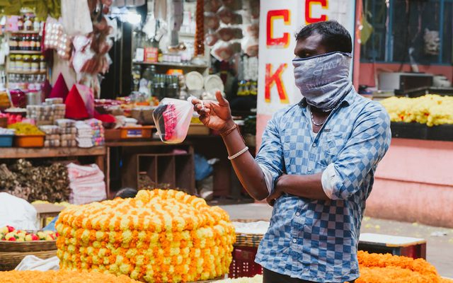
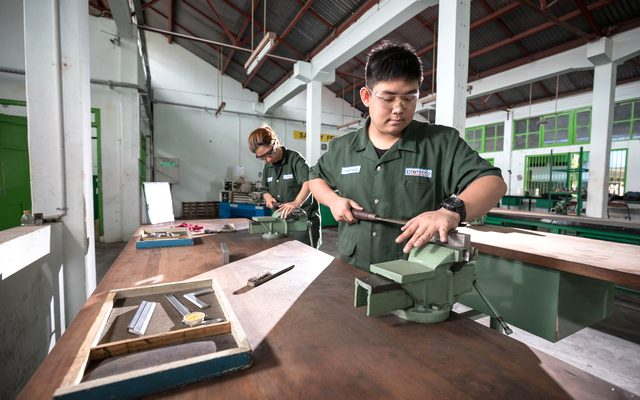
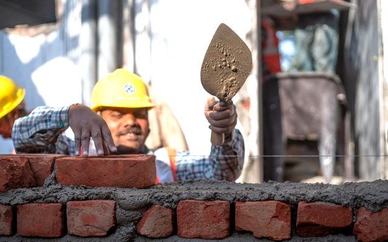
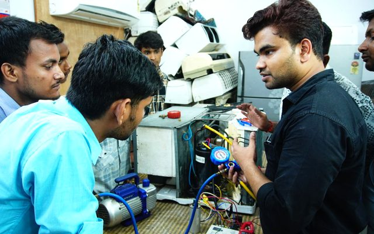
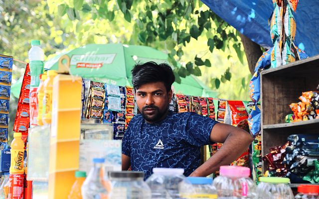
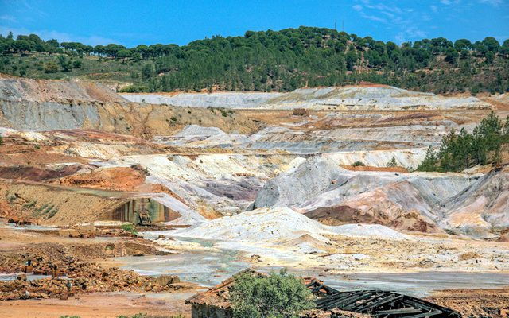
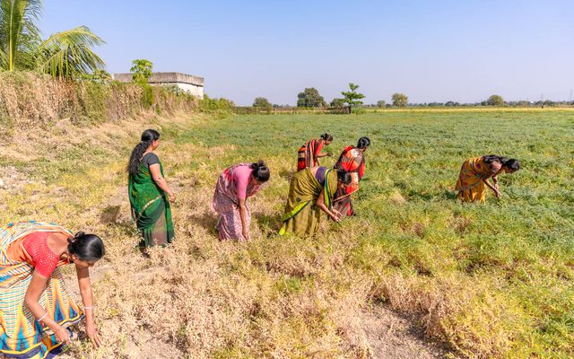
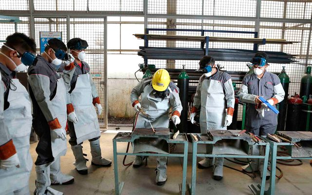
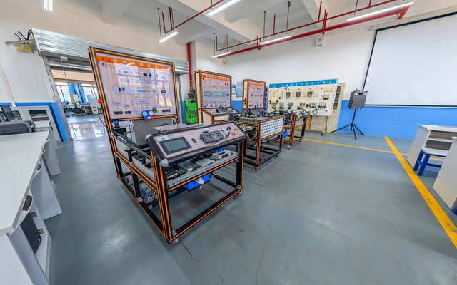
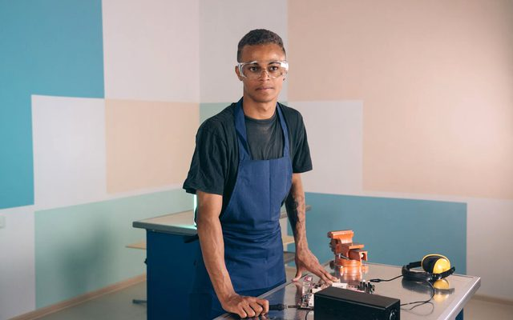
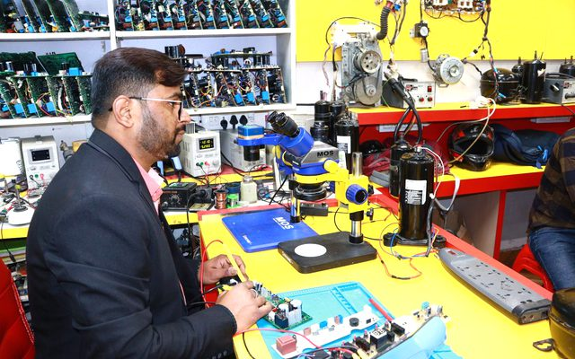
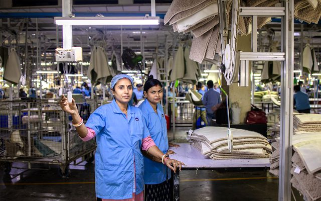
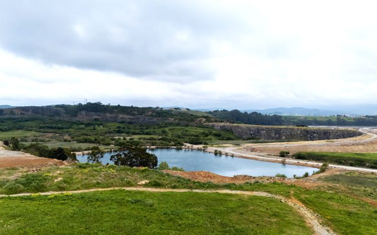
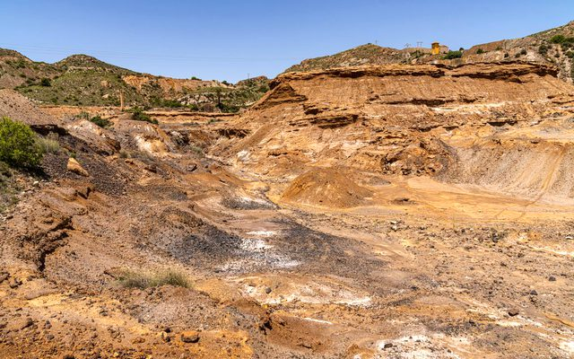
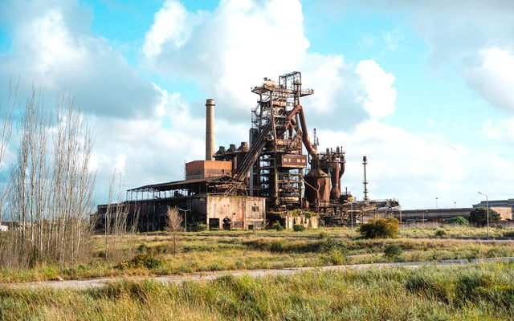
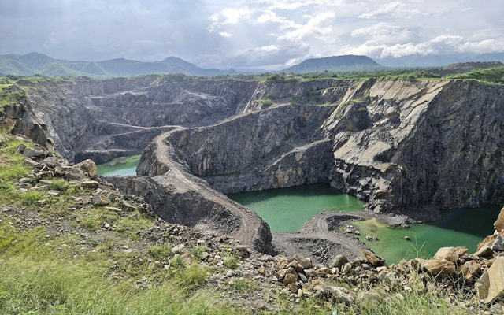
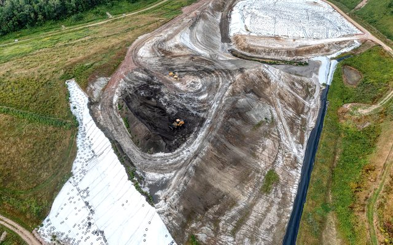
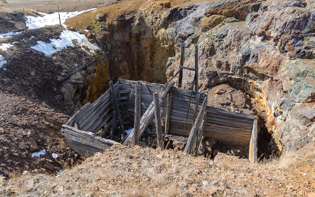
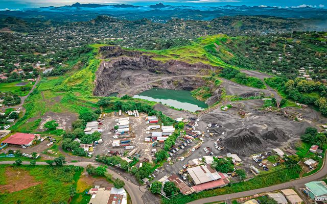
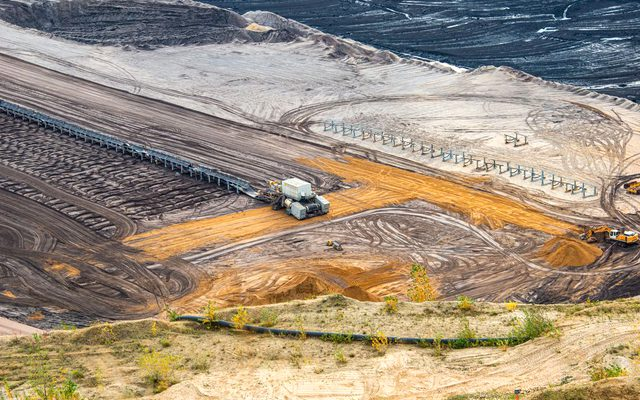
Links open external websites. Coal Controller Organisation does not endorse third-party content.

.png)


%20Ltd.jpg)

Disclaimer: Inclusion of an agency on this list does not constitute endorsement, empanelment, or recommendation by the Coal Controller Organisation or the Ministry of Coal, Government of India. Mine owners and project proponents are advised to conduct their own due diligence process before engaging any agency.
Expertise in sustainable livelihoods, rural development, and producer organizations, with a focus on community-based approaches to economic empowerment.
Specialist in agro-based and non-farm livelihood development, supporting rural communities in building sustainable income sources beyond agriculture.
Disclaimer: Inclusion of an expert does not constitute endorsement, empanelment, or recommendation by the Coal Controller Organisation or the Ministry of Coal, Government of India. Users are advised to independently verify credentials and suitability before engaging any individual.